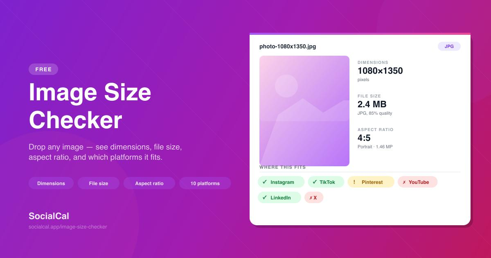

Have you ever tried uploading a photo to a website, online application, or profile page, only to receive an error saying the image is too large, the dimensions are incorrect, or the file format is not supported?
These problems are common because different websites have different image requirements. One website may accept a JPG image under 2 MB, while another may require a PNG file with specific dimensions. Social media platforms, ecommerce websites, online forms, and job application portals can all have different upload rules.
The easiest way to avoid unnecessary upload errors is to check your image before submitting it.
An online image requirement checker helps you compare an image's technical properties with the specifications provided by the website or service. Instead of guessing whether your photo is suitable, you can check its dimensions, file size, format, and aspect ratio first.
In this guide, you will learn how image requirements work, how to check a photo online, how to fix common problems, and how to prepare images for different types of uploads.
What Is an Image Requirement Checker?
An image requirement checker is an online tool that examines an image and compares its technical properties with a set of requirements.
These requirements usually come from the website, application, or platform where you want to upload the image.
For example, a website might ask you to provide an image that:
- Has a minimum width of 800 pixels.
- Has a minimum height of 600 pixels.
- Is no larger than 2 MB.
- Uses JPG or PNG format.
- Has a specific aspect ratio, such as 1:1 or 16:9.
An image requirement checker helps you determine whether your selected file meets those conditions.
Why should you check image requirements before uploading?
Checking your image first can save time and help you avoid repeated upload attempts.
Consider a situation where you are completing an online application. You select a photograph, upload it, and receive an error because the file exceeds the maximum size.
You compress the image and try again, but another error appears because the dimensions are too small.
This happens because file size and image dimensions are separate properties. Fixing one does not necessarily fix the other.
Checking all the relevant requirements before uploading helps you identify the actual problem instead of making unnecessary changes.
How to Check Image Requirements Online
You can check an image using QuickToolsPK's online Image Requirement Checker. It allows you to upload an image, enter the specifications provided by your destination website, and review the results.
Step 1: Select your image
Open the QuickToolsPK Image Requirement Checker.
Choose the image you want to inspect. The tool accepts JPG, PNG, and WEBP files up to 20 MB.
Whenever possible, start with the original image rather than a screenshot or an already edited copy.
Step 2: Enter the required image dimensions
Check the instructions provided by the website where you plan to upload your image.
Enter the minimum width and minimum height in pixels.
For example, if a website requires an image of at least 800 × 600 pixels, enter:
- Minimum width: 800 px
- Minimum height: 600 px
Be careful to distinguish between minimum dimensions and exact dimensions. A requirement of at least 800 × 600 pixels does not mean that an image must be exactly 800 × 600 pixels.
Step 3: Set the maximum file size
If the destination website has a file size limit, enter that value in the maximum file size field.
For example, if the maximum allowed size is 2 MB, enter 2.
An image can have the correct dimensions and still exceed the allowed file size. This is why you should check both properties separately.
Step 4: Select the required format
Choose the file format accepted by your destination website.
Common options include:
- JPG or JPEG
- PNG
- WEBP
Do not assume that every website accepts all three formats. Follow the instructions provided by the receiving website.
Step 5: Enter the aspect ratio if required
If the website specifies an aspect ratio, enter it in the optional aspect ratio field.
Examples include:
- 1:1 for square images.
- 4:3 for many traditional image layouts.
- 16:9 for widescreen images.
- 4:5 for portrait-oriented social media graphics.
If no aspect ratio is specified, you can leave this field blank.
Step 6: Run the requirement check
Select the check requirements option and review the results.
The checker displays individual statuses for:
- Dimensions
- File size
- Format
- Aspect ratio
If one of the requirements does not match, you can identify the specific property that needs attention.
Try the Image Requirement Checker
Check your image's dimensions, file size, and format before uploading.
4 Important Image Requirements You Should Understand
Before uploading a photo, it helps to understand what each requirement actually means. These four properties are commonly responsible for image upload errors.
1. Image Dimensions: Width and Height in Pixels
Image dimensions describe how wide and tall a digital image is.
They are usually measured in pixels, written as width × height.
For example:
| Image dimensions | Description |
|---|---|
| 400 × 400 px | Small square image |
| 800 × 600 px | Landscape image |
| 1080 × 1080 px | Square image |
| 1200 × 800 px | Landscape image |
| 1920 × 1080 px | Full HD landscape image |
Some websites specify minimum dimensions, while others require exact width and height values.
If a website requires a minimum width of 800 pixels, an image with a width of 1200 pixels may meet that particular condition. However, it must still satisfy the other requirements.
Important: Increasing the pixel dimensions of a small image does not restore missing detail. Upscaling can make an image larger, but it cannot recreate the original information that was never captured.
2. Image File Size: Why Does It Matter?
File size refers to the amount of storage space an image uses.
It is commonly measured in:
- KB (kilobytes)
- MB (megabytes)
Websites often set maximum file size limits to reduce storage usage and improve upload performance.
For example, a form may accept images up to 2 MB. If your photograph is 3.5 MB, you may need to compress it before submitting it.
However, reducing file size is not the same as reducing image dimensions.
A high-resolution image can have a relatively small file size depending on its format and compression settings. Similarly, a lower-resolution PNG image can still be larger than expected.
3. Image Format: JPG, PNG, or WEBP?
The image format determines how the image is stored and how its visual information is encoded.
| Format | Common use | Important consideration |
|---|---|---|
| JPG / JPEG | Photographs and general images | Uses lossy compression |
| PNG | Graphics, logos, and transparency | Often larger for photographs |
| WEBP | Web images and optimized graphics | Destination compatibility must be checked |
For example, an online application may only accept JPG files. Uploading a PNG image could result in an error even if the image has the correct dimensions and file size.
Also, changing a filename from photo.png to photo.jpg does not actually convert the image. You need to use an image format converter.
4. Aspect Ratio: Does Your Image Have the Correct Shape?
Aspect ratio describes the proportional relationship between an image's width and height.
It is usually written as two numbers separated by a colon.
Common aspect ratios include:
| Aspect ratio | Shape | Common use |
|---|---|---|
| 1:1 | Square | Profile pictures and square posts |
| 4:3 | Traditional landscape | General photography |
| 16:9 | Widescreen | Video thumbnails and banners |
| 4:5 | Portrait | Vertical social media posts |
| 3:2 | Landscape | Photography |
An image can have enough pixels but still have the wrong proportions.
For example, a 1600 × 900 image has a 16:9 ratio. If a destination requires a square image, you may need to crop it rather than simply reduce its dimensions.
Avoid stretching images to force a particular aspect ratio. Stretching can make faces, products, and other subjects look distorted.
Common Situations Where an Image Requirement Checker Is Useful
Image specifications are not limited to professional designers. Everyday users, students, job seekers, website owners, and businesses often need to prepare images before uploading them.
1. Online Applications and Forms
Online applications may ask for a photograph, signature, scanned image, or supporting document.
The instructions can include requirements for:
- Minimum or exact image dimensions.
- Maximum file size.
- Accepted file formats.
- Required aspect ratio.
Before uploading, read the application's instructions carefully and enter the relevant specifications into the checker.
Passing the technical checks does not guarantee that an application will accept the image. Some applications also have rules about background, content, image quality, or the way the photograph must be taken.
2. Job Applications and Professional Profiles
Job application portals may request a profile picture or other image files.
A photograph that looks good on your computer may not meet the portal's file size or dimension limits.
You can check the image first, then decide whether it needs resizing, compression, or format conversion.
For professional profiles, also consider the visual quality and framing. A technically valid image should still look clear and appropriate.
3. Ecommerce Product Images
Online stores and marketplaces often have image specifications for product listings.
A seller may need to prepare:
- Main product photographs.
- Additional product views.
- Square listing images.
- Product thumbnails.
- Images with a specific background or composition.
Checking dimensions, format, and file size before uploading can help create a more consistent product catalog.
Remember that each marketplace has its own image rules. Use the current requirements provided by the specific platform rather than assuming one standard applies everywhere.
4. Social Media Images
Social media platforms use different image placements, dimensions, and aspect ratios.
For example, a square image may work for one placement, while a vertical graphic is better suited to another.
An image requirement checker can help you compare your file's dimensions and aspect ratio with the specifications you enter.
It does not automatically guarantee that an image will display perfectly on every platform, because cropping and display behavior can vary by placement and device.
5. Website and Blog Images
Website owners often upload images to content management systems, blog posts, and landing pages.
A website may restrict the maximum upload size or support only certain file formats.
Checking an image before uploading can help identify files that need compression or conversion.
For blog images, also consider the space where the image will appear. A wide feature image and a square thumbnail may require different dimensions.
What to Do If Your Image Does Not Meet the Requirements
Finding a failed requirement is only the first step. The next step is choosing the correct solution.
The right fix depends on which property is causing the problem.
| Problem | Recommended solution |
|---|---|
| Image width is too small | Resize if the original contains enough detail |
| Image height is too small | Resize or use a suitable crop |
| File size exceeds the limit | Compress the image |
| File format is unsupported | Convert to an accepted format |
| Aspect ratio is incorrect | Crop or adjust the canvas |
| Exact dimensions are required | Crop or resize to the specified dimensions |
How to resize an image that is too small
If your image does not meet the minimum width or height, you may need to resize it.
Open the QuickToolsPK Image Resizer, upload your image, and choose the required dimensions.
However, enlarging a low-resolution image may reduce its apparent sharpness. If the original image is very small, using a higher-resolution source is usually better.
How to reduce an image that is too large
If the file exceeds the destination's maximum size, image compression may help.
The QuickToolsPK Image Compressor can help reduce image file size.
Try to maintain a reasonable balance between compression and visual quality. An image that meets the size limit but looks blurry may still be unsuitable.
How to convert an image to another format
If your image uses an unsupported format, convert it to one that the destination accepts.
Use the QuickToolsPK Image Format Converter to convert between supported formats.
Always check the resulting file format rather than relying on its filename extension.
How to correct an aspect ratio
If your image has the wrong proportions, cropping is often the better solution.
For example, converting a 16:9 landscape image into a 1:1 square image may require removing some of the content around the edges.
Check the crop preview carefully to make sure that important details remain visible.
Image Requirement Checker vs. Image Compressor vs. Image Resizer
These tools may sound similar, but they solve different problems.
| Tool | Main purpose | When to use it |
|---|---|---|
| Image Requirement Checker | Checks image properties against specified requirements | Before uploading an image |
| Image Compressor | Reduces image file size | When a file exceeds a size limit |
| Image Resizer | Changes image width and height | When dimensions are incorrect |
| Image Format Converter | Changes the actual image format | When a destination does not accept your current format |
| Image Cropper | Removes unwanted areas or changes proportions | When the aspect ratio is incorrect |
An image requirement checker evaluates the file. A compressor, resizer, converter, or cropper changes it.
That distinction is important because checking an image does not automatically fix it.
A practical workflow is to check the original image, identify the failed requirement, use the appropriate editing tool, and then check the exported image again.
Best Practices for Checking Image Specifications
A few simple habits can help you avoid common image upload problems.
Read the destination's instructions first
Do not assume that every website uses the same image specifications. Use the actual instructions from the website, application, or platform where you plan to upload the file.
Check exact dimensions versus minimum dimensions
These requirements are different.
- Minimum dimensions: The image must be at least the specified width and height.
- Exact dimensions: The image must match the specified width and height.
Entering minimum values when exact values are required can produce a misleading result.
Check file size separately
A file that meets the dimension requirements can still exceed the upload limit.
Always check file size separately instead of assuming that a smaller image will automatically meet every requirement.
Keep an original copy
Before compressing, cropping, resizing, or converting an image, save an untouched original.
This gives you a way to return to the original if the edited version loses quality or does not meet the destination's requirements.
Check the final exported image
Do not assume that an image still meets all requirements after editing.
Cropping may change dimensions and aspect ratio. Converting formats may change file size. Compression may reduce the file size but also affect image quality.
Run the checker again on the final exported file before uploading it.
Remember that technical checks are not content approval
A photo can meet the dimensions, file size, format, and aspect ratio requirements but still be rejected by a website.
The destination may also check the image's content, background, visual quality, or other rules that are not included in a technical image checker.
Frequently Asked Questions
1. What is an image requirement checker?
2. How can I check image requirements online for free?
3. Can I check image dimensions without downloading software?
4. Why does my image pass the file size check but fail the dimension check?
5. What image formats should I use for online uploads?
6. Does changing a JPG file extension convert a PNG image?
photo.png to photo.jpg changes only the filename. It does not change the underlying image format. Use a genuine image format converter.7. Can I check whether an image meets exact dimensions?
8. Can an image requirement checker automatically fix my image?
9. Does passing an image requirement check guarantee that a website will accept my photo?
10. What is the difference between image resolution and image dimensions?
11. Can I check an image before uploading it to a job application?
12. Is an image requirement checker the same as an image compressor?
Check Your Image Requirements Before Uploading
An image upload error can be frustrating, especially when you are working with an application, website, product listing, or important submission.
Instead of repeatedly uploading the same file and guessing what needs to change, check its technical properties first.
With QuickToolsPK's Image Requirement Checker, you can compare your image's dimensions, file size, format, and aspect ratio with the specifications you enter.
If something does not match, use the appropriate image tool to resize, compress, crop, or convert the file. Then check the updated version again.